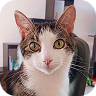
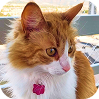
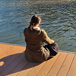
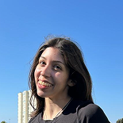
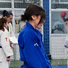

Estudio Diseño en Interacción Digital en la Universidad Gabriela Mistral en Santiago, Chile. Me apasiona investigar y conceptualizar soluciones para problemas complejos, transformando información e ideas en experiencias digitales significativas.
Enviar un correo a Mai Actualmente busco práctica profesional en UX/UI , con especial interés en Research y Design Systems. Quiero aprender de profesionales con experiencia, asumir desafíos y seguir creciendo para alcanzar la excelencia y crear experiencias significativas.
Creo en el valor del diseño y en su capacidad de influir en cómo las personas entienden, usan y experimentan el mundo. Por eso quiero ejercerlo con disciplina, curiosidad y rigor, entendiendo que un buen resultado nace tanto de una buena idea como de las condiciones para desarrollarla. También creo que el diseño se desarrolla mejor cuando existe colaboración, claridad y respeto por el trabajo de quienes lo hacen.
Me involucro profundamente en lo que hago y busco llevar cada proyecto tan lejos como pueda. Me gusta entender antes de resolver: investigo, organizo información y busco conexiones que permitan tomar mejores decisiones de diseño. También soy organizada y disfruto del trabajo en equipo cuando existe una meta común.
Fuera del diseño, suelo estructurar mis proyectos, ideas, metas y aprendizajes, y estudio por mi cuenta aquello que despierta mi curiosidad. También disfruto descubrir, guardar y clasificar inspiración, y fuera de la pantalla me encontrarás compartiendo con mis gatos, meditando o entrenando judo.




